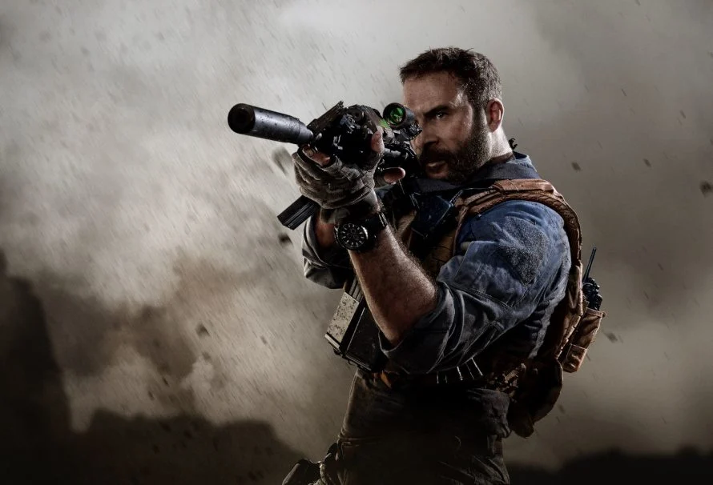

Batman is the alias of Bruce Wayne, a wealthy American playboy, philanthropist, and industrialist who resides inGotham City . Batman's origin story features him swearing vengeance against criminals after witnessing the murder of his parents Thomas and Martha as a child, a vendetta tempered with the ideal of justice. He trains himself physically and intellectually, crafts a bat-inspired persona, and monitors the Gotham streets at night. Kane, Finger, and other creators accompanied Batman with supporting characters, including his sidekicks Robin and Batgirl; allies Alfred Pennyworth, James Gordon, and Catwoman; and foes such as the Penguin, the Riddler, Two-Face, and his archenemy, the Joker.
Spider-Man is the alias of Peter Parker, a teenage high school student and an orphan raised by his Aunt May and Uncle Ben in New York City after his parents Richard and Mary Parker died in a plane crash.
n his origin story, Spider-Man gets his superhuman spider-powers and abilities after being bitten by a radioactive spider; these include clinging to surfaces and ceilings, superhuman strength, speed, agility, reflexes, stamina, and detecting danger with his precognition ability called "spider-sense." He also builds wrist-mounted "web-shooter" devices that shoot artificial spider-webs of his own design that were meant to be used for fighting his enemies and web-swinging across the city. After his personal tragedy of his late Uncle Ben, Peter began using his spider-powers to fight against crime as Spider-Man.Spider-Man had no superhero mentor like Captain America and Batman; he thus had to learn for himself that with great power comes great responsibility.
Captain JohnPrice is a fictional character in the Call of Duty series. He is the main protagonist of the original Modern Warfare sub-series. In the trilogy, Price first ranked as a lieutenant, before being promoted to Captain and taking charge of a Special Air Service squad. He later becomes a leading member of an international task force, "141". Another version of Price features as one of the main protagonists in the rebooted Modern Warfare sub-series. Both versions of the character have been well received by critics, with the original becoming one of the most popular Call of Duty characters.

VOICE: